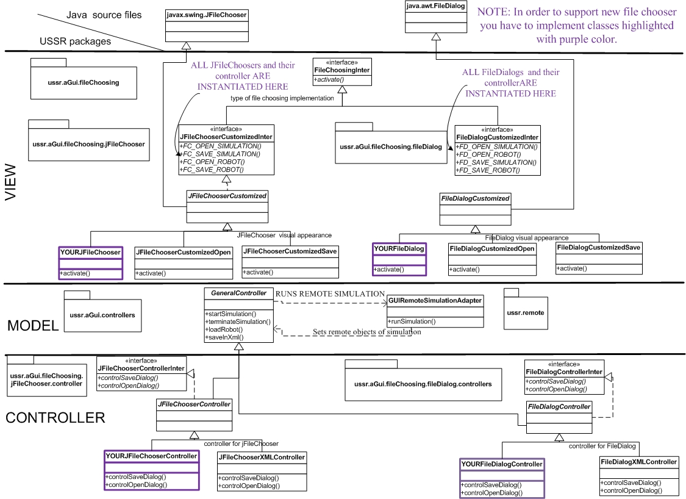

This package supports file choosing with two slightly differing forms of implementation and they are: 1)JFileChooser from Swing and 2) FileDialog from AWT libraries. The reason why there are two implementations is that JFileChooser is well supported for Windows and Linux OSs(Operating System), however there are problems with (look and feel) and file filtering on Macintosh (Mac). It seems that FileDialog do not have these problems on Mac. The disadvantage is "double coding". FUTURE SOLUTIONS: It is possible to implement custom look and feel (too time consuming at this moment) and second is to wait until JFileChooser will be better supported on Mac.
Implement your own classes highlighted with purple color in the design class diagram beneath.
 Instantiation of file choosers is executed in their interfaces. It is also highlighted with
purple color in the diagram above.
For example: jFile Choosers are instantiated here:
JFileChooserCustomizedInter.java (ussr.aGui.fileChoosing.jFileChooser.JFileChooserCustomizedInter.java)
File dialogs are instantiated here:
FileDialogCustomizedInter.java (ussr.aGui.fileChoosing.fileDialog.FileDialogCustomizedInter.java)
If you are interested in opening links like the ones above, directly from Eclipse. Set default editor for extension ".java" files, to be any text editor.